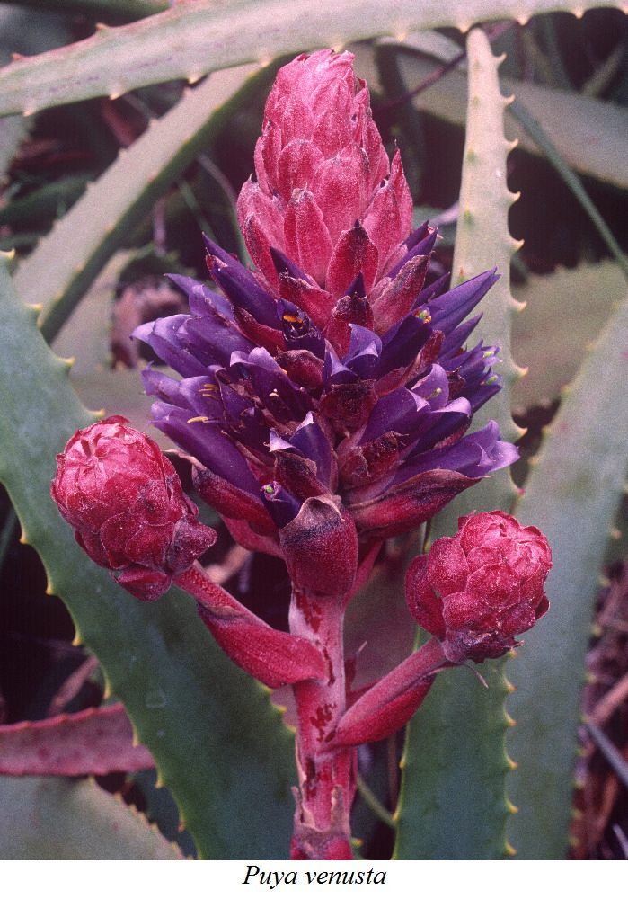

| Newsletter of the Cactus and Succulent Society of San Jose |
|
|
Brian Kemble - Puyas  The Bromeliad Family is well known for its many epiphytic plants, such as Tillandsias, but there are also lots of terrestrial bromeliads which inhabit dry areas in South America (and also in Mexico), often growing together with cacti. Some of these are popular as landscape plants in succulent gardens, where their dramatic flower spikes draw attention. This is certainly true of the Puyas, which come from South America and often have flowers with unusual colors, such as blackish-purple or metallic blue-green. The natural distribution of the genus Puya basically follows the Andes, from Chile and Argentina in the south up to Colombia. The largest species in the whole Bromeliad Family (with the largest inflorescence) is Puya raimondii, from the high Andes in Peru and Bolivia. This and other seldom-seen species will be featured in this presentation. Brian Kemble is the Curator of the Ruth Bancroft Garden in Walnut Creek, and the Vice-President of the San Francisco Succulent & Cactus Society. He also serves on the Board of the Cactus & Succulent Society of America, and has been growing succulents for over 40 years. He writes a garden column called "On the Dry Side" which appears in the San Jose Mercury News once a month, and he has written numerous articles on succulents over the years. In addition, he has contributed photos to many books on succulents, including The Timber Press Guide to Succulent Plants of the World.
|
| The Cactus Courier is the newsletter of the Cactus and Succulent Society of San Jose (CSSSJ). The members of the CSSSJ freely contribute the materials published herein. The accuracy of information and opinions expressed are those of the contributors. Scannable hardcopy and Windows format text files sent via email or on CD or DVD are acceptable as input. Send newsletter articles to Rich Kroll at: csssj@ckart.com |
|
Contact our president, Sonia Dyer, at sonia.dyer@sbcglobal.net. If you would like a membership badge, please contact Kathi at creativesucculents@yahoo.com. |
){kind=link}